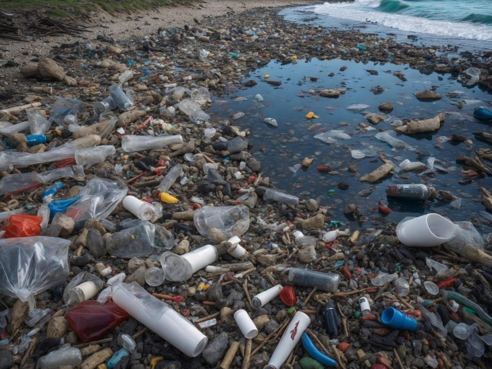

-
- 
-
어린이는 쓰레기로 오염된 자연을 바라보며 어떤 생각을 하고
있을까요?심각하게 오염됐다고 생각하고 있을 것 같습니다.
이런 곳에서는 살 수 없겠다고 생각하고 있을 것 같습니다.
쓰레기를 바라보는 어린이가 불쌍하다는 인식이 아닌 인간 주변이 파괴되고 더럽혀진 이유를 함께 생각해야 합니다.
자연을 파괴하고 더럽힌 것은 인간이며 그런 인간의 행위로 인간이 다시 힘겨워질 수 있다는 것을 알아야 합니다.